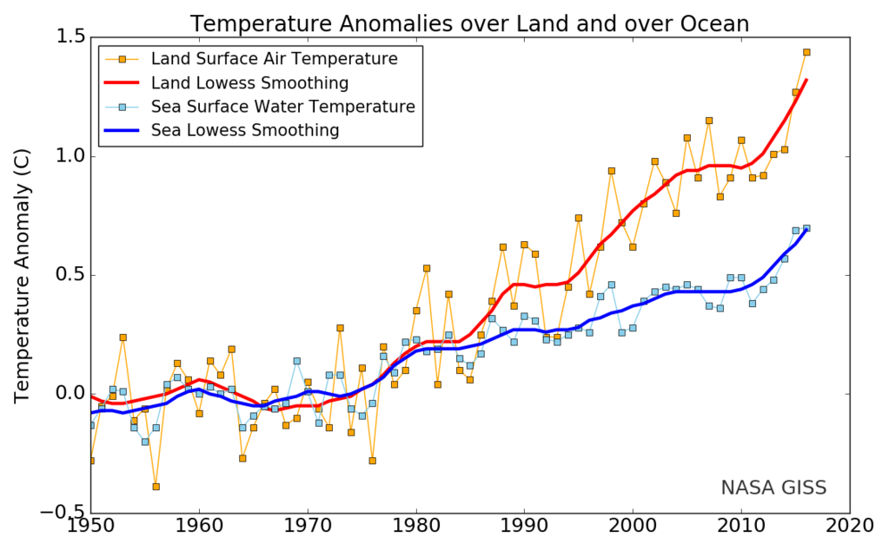
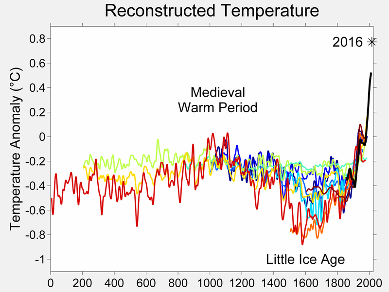
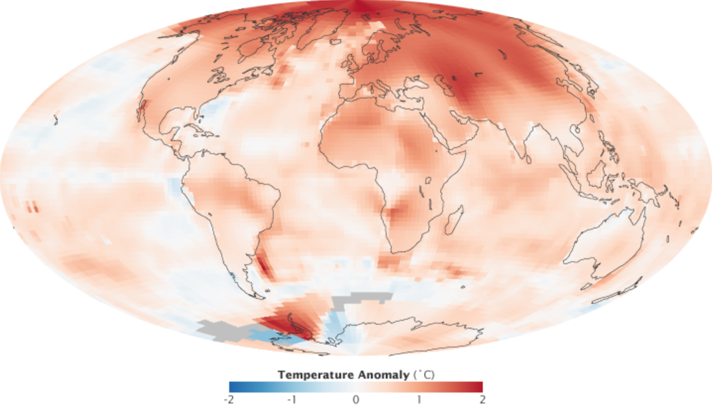

 Multiple independently produced datasets confirm that from 1880 to 2012 the global average (land and ocean) surface temperature increased by 0.85 [0.65 to 1.06] °C.From 1906 to 2005, Earth's average surface temperature rose by 0.74±0.18 °C. The rate of warming almost doubled in the last half of that period (0.13±0.03 °C per decade, against 0.07±0.02 °C per decade).Although the popular press often reports the increase of the average near-surface atmospheric temperature as the measure of global warming, most of the additional energy stored in the climate system since 1970 has accumulated in the oceans. The rest has melted ice and warmed the continents and the atmosphere.
Since 1979, the average temperature of the lower troposphere has increased between 0.12 and 0.135 °C (0.216 and 0.243 °F) per decade, satellite temperature measurements confirm. Climate proxies show the temperature to have been relatively stable over the one or two thousand years before 1850, with regionally varying fluctuations such as the Medieval Warm Period and the Little Ice Age.
The warming evident in the instrumental temperature record is consistent with a wide range of observations, as documented by many independent scientific groups. Examples include sea level rise, widespread melting of snow and land ice,increased heat content of the oceans, increased humidity,and the earlier timing of spring events, e.g., the flowering of plants.The probability that these changes could have occurred by chance is virtually zero.
See Also:Cold blob (North Atlantic)

Global warming refers to global averages. It is not uniform around the world: effects can vary by region.Since 1979, global average land temperatures have increased about twice as fast as global average ocean temperatures (0.25 °C per decade against 0.13 °C per decade). Ocean temperatures increase more slowly than land temperatures because of the larger heat capacity of the oceans and because oceans lose more heat by evaporation.Since the beginning of industrialisation in the 18th century, the temperature difference between the hemispheres has increased due to melting of sea ice and snow in the North, and because there is more land in the Northern Hemisphere. In the past 100 years, average Arctic temperatures have increased at almost twice the rate of the rest of the world.This has been referred to as Arctic amplification.
Although more greenhouse gases are emitted in the Northern than in the Southern Hemisphere, this does not contribute to the difference in warming because the major greenhouse gases persist long enough to diffuse within and between the two hemispheres.
 There are different ways in which a climate can be forced to change, but because the climate system has large thermal inertia, it can take centuries – or even longer – for the climate to fully adjust. One climate commitment study concluded that if greenhouse gases were stabilized at year 2000 levels, surface temperatures would still increase by about 0.5 °C,and another found that if they were stabilized at 2005 levels, surface warming could exceed a whole degree Celsius. Some of this surface warming would be driven by past natural forcings which have not yet reached equilibrium in the climate system. One study using a highly simplified climate model indicates these past natural forcings may account for as much as 64% of the committed 2050 surface warming, and their influence will fade with time compared to the human contribution.
Global temperature is subject to short-term fluctuations that overlay long-term trends, and can temporarily mask or magnify them. The relative stability in surface temperature from 2002 to 2009, which has since been dubbed the global warming hiatus by the media and some scientists,may be an example of such an episode. 2015 updates to account for differing methods of ocean surface temperature measurements show a positive trend over the recent decade.
Sixteen of the seventeen warmest years on record have occurred since 2000. While record-breaking years attract considerable public interest, individual years are less significant than the overall trend. Some climatologists have criticized the attention that the popular press gives to "warmest year" statistics. In particular, ocean oscillations such as the El Niño–Southern Oscillation (ENSO) can cause temperatures of a given year to be abnormally warm or cold for reasons unrelated to the overall trend of climate change. Gavin Schmidt stated: "the long-term trends or the expected sequence of records are far more important than whether any single year is a record or not."